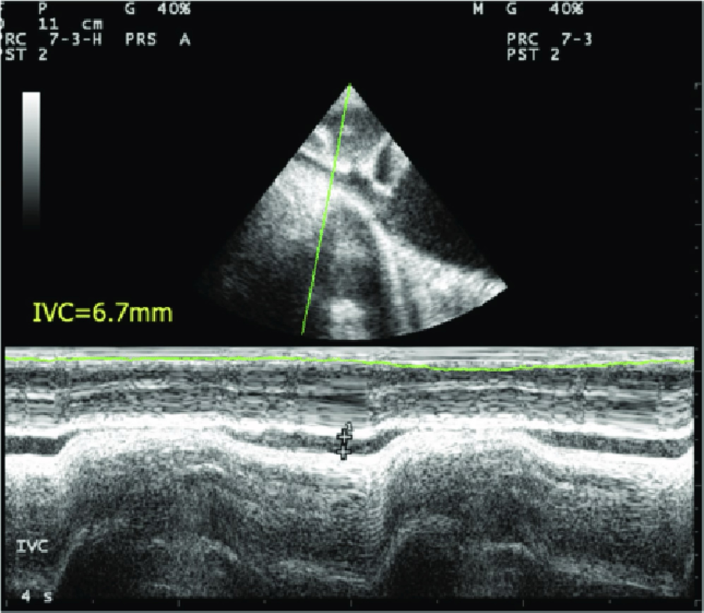
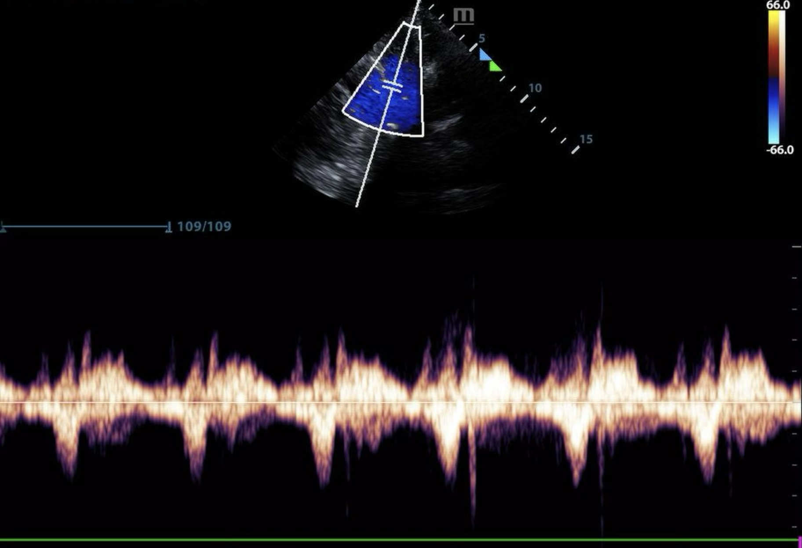
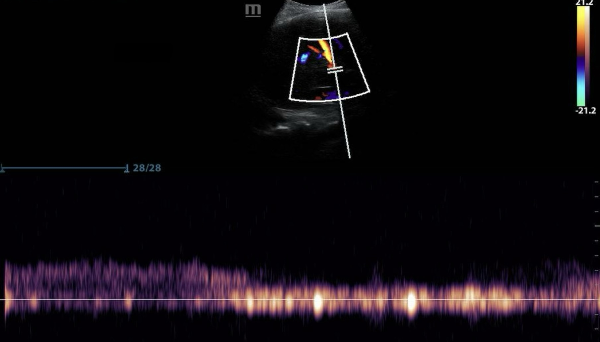
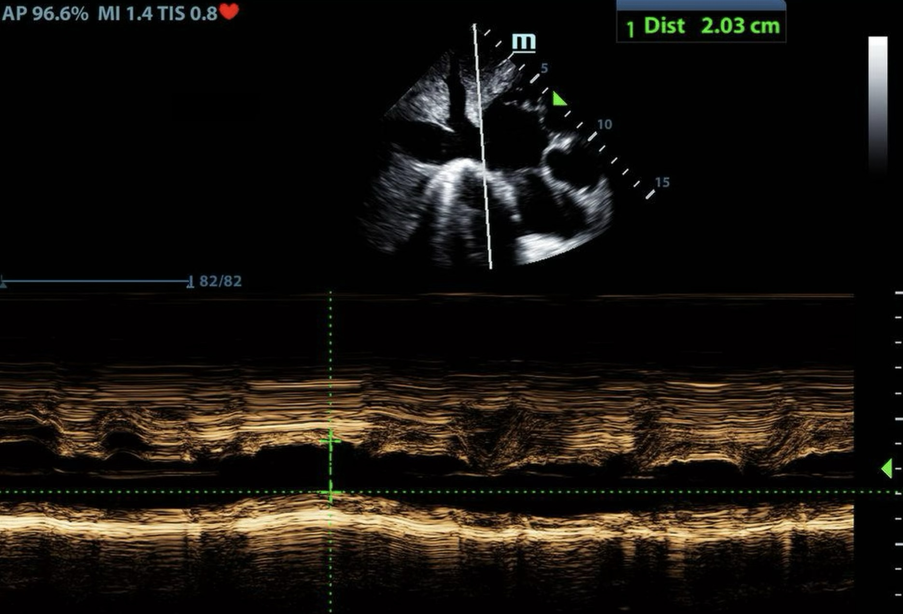
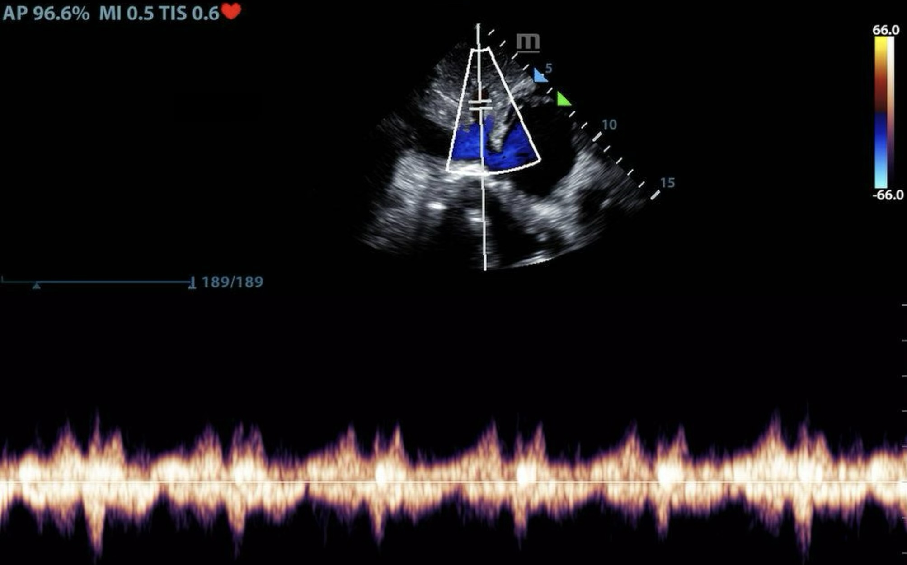
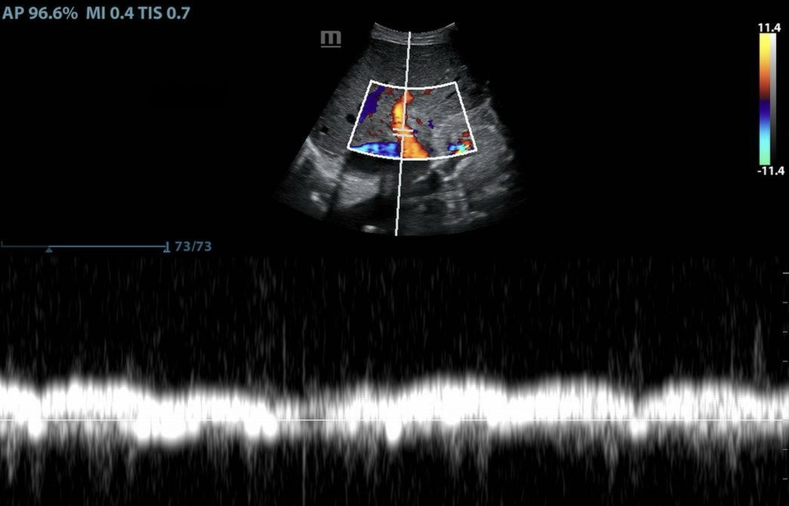

Apply the IVC + VExUS framework to a real patient — step by step.
📋 Clinical scenario
62-year-old male admitted for urosepsis
Vital signs: MAP 58 mmHg, HR 120, SpO₂ 98% on NC 2 L
Lung exam: clear to auscultation bilaterally (CTAB)
Labs: Cr 1.0 → 1.3, lactate 3.4
Has already received 4 L of crystalloid in the past 24 hours
🧠 Clinical question
The patient is still hypotensive after 4 L of fluid, and the creatinine is climbing. Do you give more fluid? Start a vasopressor? Diurese? The IVC + VExUS framework will help us decide. Click Next to see the ultrasound findings.
✏️ Case 1 · Step 1
🩺 Case 1: 62M · Urosepsis · MAP 58 · HR 120 · Cr 1.0→1.3 · Lactate 3.4 · 4 L given
IVC Assessment

Findings
Subxiphoid view, M-mode: IVC measures < 1 cm with ΔIVC > 35% across the respiratory cycle.
Question 1.1
Based on the IVC findings, is this patient likely fluid responsive?
✅ Correct — A. Both criteria support fluid responsiveness:
IVC < 1 cm — the "fill" rule (Module 2; sensitivity ~90%).
A fluid bolus is likely to increase cardiac output. But responsiveness alone isn't enough — we also need to check tolerance.
✏️ Case 1 · Step 2
🩺 Case 1: 62M · Urosepsis · MAP 58 · HR 120 · Cr 1.0→1.3 · Lactate 3.4 · 4 L given
VExUS Assessment (mVExUS)
Hepatic and portal vein Doppler — the bedside-friendly mVExUS combination.
Hepatic vein

Normal triphasic flow (S > D).
Portal vein

Near-continuous flow (PI < 30%).
Question 1.2
Based on these mVExUS findings, what is the level of venous congestion?
✅ Correct — A. Both vessels show normal patterns — hepatic vein is triphasic (S > D), and the portal vein is near-continuous (PI < 30%). This is mVExUS Grade 0: no congestion, fluid tolerant. Despite the 4 L already given, this patient still has room — fluid will not worsen organ congestion.
✏️ Case 1 · Step 3
🩺 Case 1: 62M · Urosepsis · MAP 58 · HR 120 · Cr 1.0→1.3 · Lactate 3.4 · 4 L given
Synthesis — What's Next?
IVC findings
IVC < 1 cm, ΔIVC > 35%
→ Fluid responsive ✓
mVExUS findings
Hepatic normal, Portal normal
→ Fluid tolerant ✓
Question 1.3
What is the most appropriate next step?
✅ Correct — A. This patient is in the Fluid Responsive AND Tolerant quadrant of the IVC × VExUS matrix — the safest scenario for empiric fluid resuscitation. The hypotension and rising creatinine reflect under-resuscitation rather than congestion. Continue fluid, and reassess IVC + VExUS as the picture evolves.
✅ Case 1 Complete
Take-Home — Case 1
A "fluid responsive AND tolerant" patient — the green quadrant.
Hypotension after fluid resuscitation doesn't always mean "no more fluid." The clinical picture alone (rising Cr, 4 L given) might steer you wrong.
A small, collapsing IVC + a clean mVExUS confirms the patient is responsive AND tolerant — fluid is the right call.
Lesson: IVC + VExUS reframes the "more fluid vs. pressors" question with objective bedside data.
🩺 Case 2
HFpEF with Oliguria
Apply the IVC + VExUS framework to an intubated patient with congestion.
📋 Clinical scenario
70-year-old woman with HFpEF + pneumonia
Vital signs: MAP 62 mmHg, HR 105, intubated
Ventilator (PRVC): PEEP 5, TV 6 mL/kg, RR 16
JVP hard to assess; lung sounds: mild crackles
Oliguric overnight
🧠 Clinical question
The patient has borderline-low MAP and is oliguric — the instinct might be to give more fluid. But HFpEF, mild crackles, and difficult JVP suggest possible congestion. Is fluid the answer, or is she already wet? Click Next to see the ultrasound findings.
Subxiphoid view, M-mode: IVC measures > 2.5 cm with distensibility < 16.5%. The vent settings (PEEP 5, TV 6 mL/kg) meet the criteria for reliable IVC interpretation in mechanically ventilated patients.
Question 2.1
Based on the IVC findings, is this patient likely fluid responsive?
✅ Correct — B. Both criteria argue against fluid responsiveness:
IVC > 2.5 cm — the "don't fill" rule (Module 2; sensitivity 80–90% for non-responsiveness).
A fluid bolus is unlikely to increase cardiac output. Her low MAP is not from under-resuscitation. Next, let's check tolerance — is she already congested?
Based on these mVExUS findings, what is the level of venous congestion?
✅ Correct — C. Both vessels show severe patterns — hepatic S-wave reversal AND portal pulsatility ≥ 50%. With dilated IVC + 2 severe vessel findings, this is consistent with mVExUS Grade 3 (severe congestion). More fluid will worsen organ congestion.
IVC > 2.5 cm, distensibility < 16.5%
→ NOT fluid responsive ✗
mVExUS findings
Hepatic S-reversal, Portal severe
→ NOT fluid tolerant ✗
Question 2.3
What is the most appropriate next step?
✅ Correct — C. This patient is in the NOT responsive + NOT tolerant quadrant — the red quadrant of the IVC × VExUS matrix. The oliguria is from congestive AKI, not under-perfusion. Diurese to relieve the venous congestion; pressor support may be added if MAP doesn't improve as decongestion progresses.
✅ Case 2 Complete
Take-Home — Case 2
A "NOT responsive, NOT tolerant" patient — the red quadrant.
Borderline-low MAP + oliguria doesn't always mean "more fluid." In HFpEF, the kidneys can be hypoperfused from venous congestion, not arterial hypoperfusion.
A dilated, non-collapsing IVC + severe mVExUS pattern confirms the patient is not responsive AND not tolerant — diuresis is the right call.
Lesson: Vent settings matter. PEEP ≤ 5 and TV ≤ 8 mL/kg made the IVC findings reliable here.
🩺 Case 3
ARDS on High PEEP
Apply the framework when one of your tools has hit its limits.
📋 Clinical scenario
50-year-old male with ARDS on mechanical ventilation
On low-dose norepinephrine: MAP 60–62, HR 105, intubated
Patient is on pressors with a borderline MAP, the kidneys are starting to suffer, and the vent settings are aggressive. Should we give fluid, push pressors, or diurese? Before deciding, note one thing: PEEP 10 is above the Module 2 threshold for reliable IVC interpretation. Click Next — pay attention to which tool we can trust here.
✏️ Case 3 · Step 1
🩺 Case 3: 50M · ARDS · MAP 60–62 on norepi · HR 105 · Intubated (PEEP 10, TV 6 mL/kg) · Rising Cr
IVC Assessment

Findings
Subxiphoid view, M-mode: IVC measures ~2.0 cm with distensibility ~12%.
Question 3.1
Based on the IVC findings at PEEP 10, what is the most appropriate interpretation?
✅ Correct — C.PEEP 10 is above the 5 cmH₂O threshold for reliable IVC interpretation (Module 2: ideal patient selection requires PEEP ≤ 5). At higher PEEP, the inspiratory swing in IVC diameter is exaggerated by the larger intrathoracic pressure changes and no longer faithfully reflects preload responsiveness. The 12% distensibility can't be trusted here. Fortunately, VExUS works at any PEEP — Doppler patterns reflect actual venous pressures regardless of vent settings.
✏️ Case 3 · Step 2
🩺 Case 3: 50M · ARDS · MAP 60–62 on norepi · HR 105 · Intubated (PEEP 10, TV 6 mL/kg) · Rising Cr
VExUS Assessment (mVExUS)
Hepatic and portal vein Doppler.
Hepatic vein

S < D — mild congestion.
Portal vein

Mild pulsatility (~30%).
Question 3.2
Given IVC ≥ 2 cm plus mildly abnormal findings in both vessels (no severe patterns), what is the VExUS grade?
✅ Correct — B. The IVC is dilated (gate met) and there are mild findings in both vessels (hepatic S < D, portal pulsatility ~30%) but no severe findings. Per the grading scheme — IVC ≥ 2 cm + at least one mildly abnormal vessel and no severe = Grade 1 (mild congestion). This is the ambiguous "borderline" zone clinically.
✏️ Case 3 · Step 3
🩺 Case 3: 50M · ARDS · MAP 60–62 on norepi · HR 105 · Intubated (PEEP 10, TV 6 mL/kg) · Rising Cr
Synthesis — What's Next?
IVC findings
Unreliable at PEEP 10
→ Responsiveness: unclear
mVExUS findings
Grade 1 (mild congestion)
→ Tolerance: borderline
Both static tools are ambiguous — IVC can't be trusted, and VExUS is only mildly abnormal. Neither gives a definitive answer.
Question 3.3
What is the most appropriate next step?
✅ Correct — C. Static tools don't give a clear answer here. Dynamic testing — a small fluid challenge with reassessment — fills the gap and reveals both responsiveness and tolerance at once:
MAP improves + urine output picks up + VExUS unchanged → responsive AND tolerant → continue fluids cautiously
VExUS worsens to Grade ≥ 2 without MAP improvement → at the tolerance ceiling → pivot to diuresis
No change in MAP or VExUS → not responsive → titrate pressors
A small (not large) bolus keeps the test safe in this borderline scenario. In ARDS, conservative fluid management remains the overarching principle (FACTT trial).
✅ Case 3 Complete
Take-Home — Case 3
When static tools are ambiguous, test dynamically.
IVC interpretation has prerequisites: tidal volume ≤ 8 mL/kg and PEEP ≤ 5 cmH₂O. At PEEP 10, IVC distensibility can't be trusted.
VExUS works at any PEEP — but Grade 1 (mild) findings sit in an ambiguous "borderline" zone clinically. They don't mandate diuresis on their own.
When static tools are ambiguous, a dynamic fluid challenge (250–500 mL with reassessment in 30–60 min) reveals responsiveness and tolerance simultaneously. The patient's response is the most informative test.
Lesson: Static tools (IVC, VExUS) + dynamic testing together give the complete picture, especially in complex cases. In ARDS, keep the test small — conservative fluid management remains the principle (FACTT).